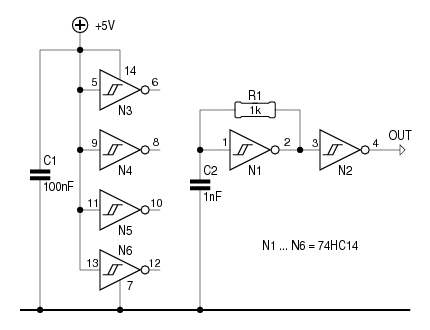
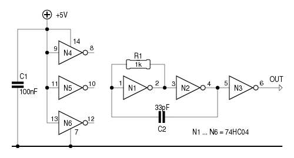

Zowat elke maand komt er iemand in mijn favoriete forum op de proppen met een AVR die “dood” is. De meest-voorkomende oorzaak is het foutief instellen van de fuse-bits.
IMHO is het voornamelijk Avr Studio die voor verwarring zorgt.
Als je een optie kan aanvinken als “Ext. Crystal Osc. 8.0-
Mhz...” is dat onzin. Je kan de fuses helemaal niet
instellen op een externe kristal-oscillator!
Je kan ze wél instellen op een extern kristal. En je kan ze
instellen op een extern kloksignaal, waarbij het niet uitmaakt
wat de bron van dat signaal is - voorwaarde is wel, dat de
puls/pause-verhoudingen nagenoeg gelijk zijn.
De nietsvermoedende AVR-adept ziet een eindeloze lijst van mogelijkheden voor zijn ogen verschijnen, en vinkt argeloos iets aan, waar het woord “Crystal” in voorkomt, zonder notie te nemen van de “Osc” die er op volgt. En dan zit er plots geen leven meer in het beestje...
Wat nu?
Geef de AVR wat hij verwacht: een extern kloksignaal.
Een fabrieksnieuwe AVR draait intern op 8MHz of op 9.6MHz.
Daarnaast is het CKDIV8-bit geactiveerd, zodat de uiteindelijke
systeemklok 1MHz of 1.2MHz bedraagt.
Een extern kloksignaal van 1MHz volstaat dan niet, omdat de
systeemklok in dat geval terugvalt naar 125kHz. Dat is
waarschijnlijk te traag voor de programmer, als die op zijn
standaard-snelheid draait.
Wie over een functiegenerator beschikt, is er snel van af. Stel die in op een blokgolf van 8MHz die varieert tussen 0V en 5V (of tussen 0V en Vcc als de AVR op een lagere spanning werkt), verbind de uitgang met de XTAL1-pin van de AVR, en zet vervolgens de fuses naar wens.
Geen functiegenerator? Dan maar een oscillator bouwen.

Een 74HC14 leent zich uitstekend tot het bouwen van een
oscillator.
Een proefopstelling als hiernaast levert nagenoeg 9MHz. Het
gebruikte IC is in dit geval een product van ST. Ik maak daar
melding van, omdat andere fabrikaten iets kunnen afwijken wat de
behaalde frequentie betreft. Die hangt immers samen met de
boven- en de ondergrens waarbij de Schmitt-trigger ingangen
omklappen - hoe groter het verschil tussen die grenzen, hoe
langer het duurt om C2 te laden of te ontladen, en hoe lager de
frequentie.
Een 74HC132 ―vier NAND-poorten met Schmitt-trigger ingangen― kan op gelijkaardige wijze ingezet worden. Knoop daarbij ongebruikte ingangen aan Vcc.
Het gebruik van een 74HCT14 of een 74HCT132 valt af te raden.
Het schakelpunt van de HC-versies ligt ongeveer op de helft van
de voedingsspanning: 2.5V bij Vcc = 5V.
Bij de HCT-versies ligt dat schakelpunt ergens tussen 1.6V en
1.7V. Het gevolg daarvan is, dat de puls/pause-verhouding van
het uitgangssignaal te sterk afwijkt van de ideale
50/50%.

Met een 74HC04 valt ook een oscillator te maken, als is de
aanpak iets anders.
Ook hier is de uitgangsfrequentie ongeveer 9MHz.
Weerom kan de schakeling uitgevoerd worden met NAND-poorten
(74HC00), als men de ongebruikte ingangen met Vcc
verbindt.
En ook hier valt het gebruik van de HCT-versie af te raden.
Ook een andere AVR kan als oscillator dienst doen.
Sommige typen ―de ATtiny2313 bijvoorbeeld― zijn voorzien van
een CKOUT-pin. Daarbij kunnen de fuse-bits zodanig ingesteld
worden, dat de systeem-klok op die CKOUT-pin verschijnt.
Bij de genoemde ATtiny2313 hoeft men enkel het CKDIV8-bit op '1' te
zetten, en het CKOUT-bit op '0', zonder wat aan de CKSEL-bits te wijzigen om een nette 8MHz-klok op de CKOUT-pin
te zien verschijnen. Er hoeft niet eens een programma te
draaien.
Een andere aanpak bestaat er in, een timer in CTC-mode te
schakelen en in het compare-register 0x01 te plaatsen.
Op de bijbehorende PWM-uitgang komt dan de helft van de
systeemklok te staan.
Hierbij is het wel noodzakelijk, een kristal van 16MHz of meer
te gebruiken om een uitgangsfrequentie van 8MHz te bekomen.
Bij het instellen van de fuse-bits maakt men liefst niet opnieuw
de fout om voor “Ext. Crystal Osc.” te kiezen!!!
Wie, zoals ik, regelmatig componenten uit afgedankte
elektronica-spullen sloopt, heeft vast wel enkele
kristaloscillators in een voorraadbakje liggen.
Niet zelden is de frequentie van zo'n ding veel hoger dan
gewenst. Een binaire deler, een 74HC4040 bijvoorbeeld, kan
dan soelaas brengen.
Bij kleinere AVR's ligt nog ander onheil op de loer: vaak kan
men de RESET-pin als gewone I/O-pin instellen.
Dat is handig, als men een extra I/O-pin nodig heeft. Het gevolg
is echter, dat het niet meer mogelijk is de AVR via
ISP1 te benaderen, omdat daarvoor
de RESET-funtie noodzakelijk is!
Er zit dan weinig anders op, dan een HVSP2 te bouwen of te kopen.
Er bestaat overigens een truuk om de RESET-pin binnen bepaalde grenzen als ingangspin te gebruiken zonder de RESET-functie op te geven.